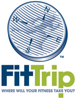

Find us on Facebook
January 2014FitTrip 2014FitTrip 2014 is just around the corner! This 12 week body transformation program offers the motivation and FUN you need to develop and begin a healthy lifestyle! For $79 or $71 (for 2012 and 2013 participants) you will receive:
And of course... the chance to win a $1000 American Express Travel Card! Stop by or call the Front Desk to sign up or ask any questions! The Weigh In dates are Friday February 7th and Tuesday February 11th, so don't delay! 
Members of the Month: Brian Wilson and Tommy WilsonThe Member of the Month section provides a way for us to recognize dedicated Blomeyer members who have been working hard and cosistently to get in better health and shape with the help of the BHFC. If you know a fellow Blomeyer member whose efforts should not go unnoticed, please tell us! To nominate someone, please send us an email at blomeyer@emory.edu with the name and a few highlights of the person you'd like to see as our next Member of the Month. The Blomeyer Members of the Month for January 2014 are Brian Wilson and Tommy Wilson. Congratulations, Brian and Tommy! How did you start your wellness lifestyle?Brian: 1987 - high school football/basketball/track. I’ve tried to stay active/fit ever since. Thankfully, I’ve learned to correct most of what I did wrong (fitness-wise) in the beginning.
What have you accomplished thus far concerning your health?Brian: I don’t know that I’ve “accomplished” much other than to simply stay healthy! Several years I ago I did compete in a couple of cycling events and was able to finish significantly better the second and third times around than I did in the first race. Since then I’ve mainly tried to be the healthiest, fittest version of myself that I can be.
What are your future wellness endeavors?Brian: To increase endurance. Lifting heavier and heavier weights is one thing; but to increase endurance AND strength is definitely a long-term goal.
Hometown?Brian: Tulsa, Oklahoma. Born there, but actually raised in Sperry, Oklahoma – total population: 900 people. No stoplights :-)
What types of hobbies and interests do you have outside of exercising?Brian: The top hobby would be racing after my three (soon-to-be four) kids! Also, definitely reading – I constantly have a stack of books I’m working my way through. And film – both watching them and working on writing at least three or four screenplays (when I can find the time). Photography. And, duh, fitness :-)
Fun fact about you:Brian: I’ve tried to bicycle in every city/state I’ve lived in/visited: I’m up to about ten.
Brian's Favorites:
Tommy's Favorites:
Article of the Month: Know Your NumbersTake healthy action Your health is important! “Knowing Your Numbers” can help you make sure you are on the right path to living healthy and making smart health decisions. What is a health screening? It is a simple health check that measures your blood pressure, cholesterol, glucose, and BMI (body mass index). If you participate in a screening and complete an online health assessment, you can earn an incentive on your Emory medical plan. Options for receiving a screening Option 1: Attend a free, onsite screening at Emory
Option 2: Get a screening at your doctor's office
Recipe: Tomato and Basil Flatbread PizzaIngredients:
Directions:
Quote of the MonthDefeat is not the worst of failures. Not to have tried is the true failure. -Unknown Health Observances of the Month
|